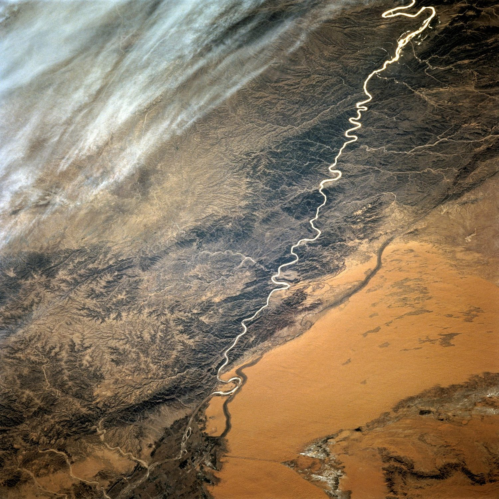
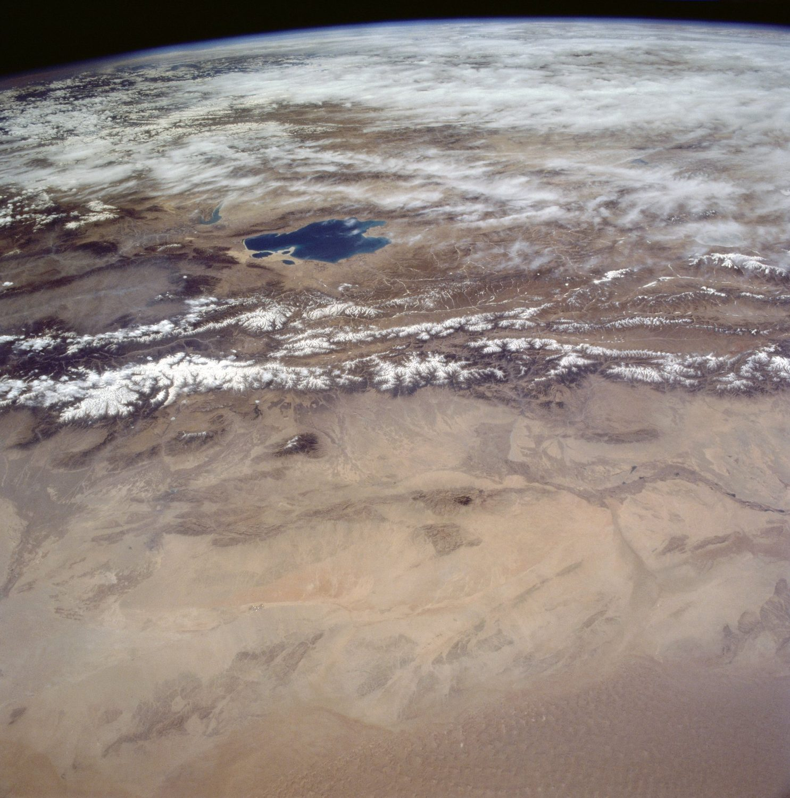
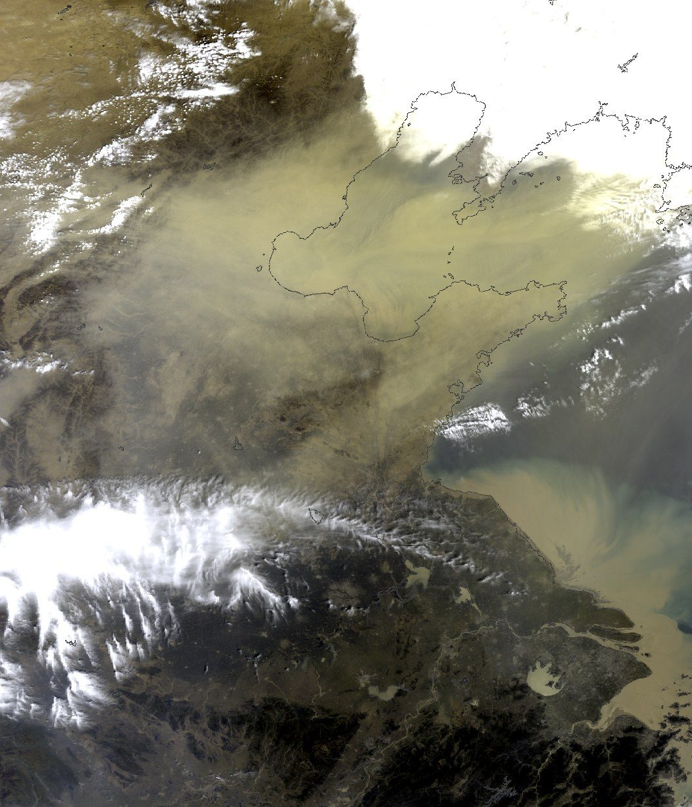
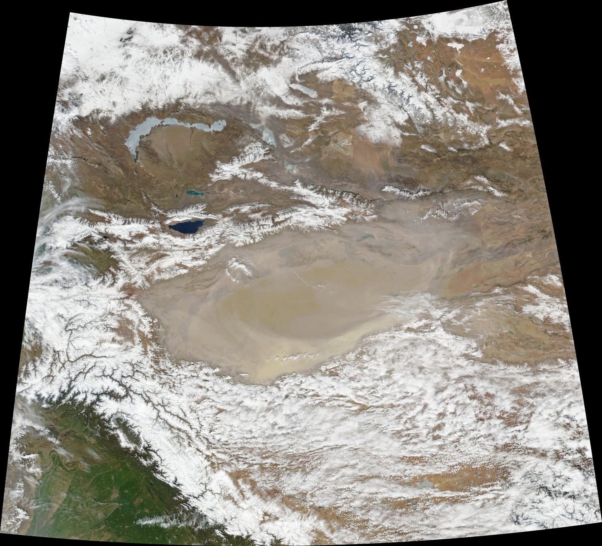
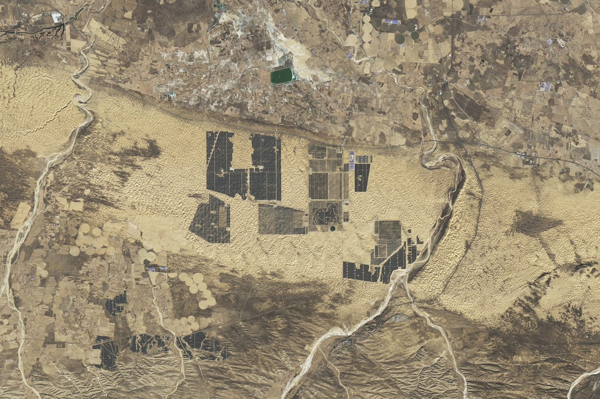
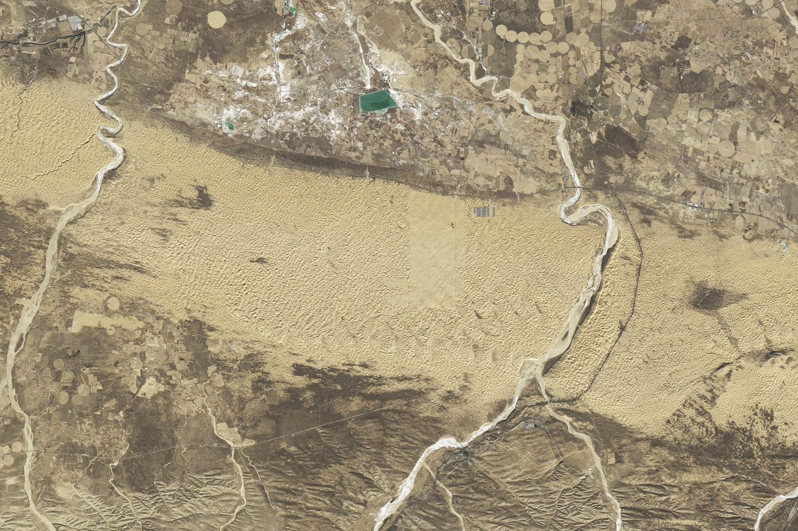
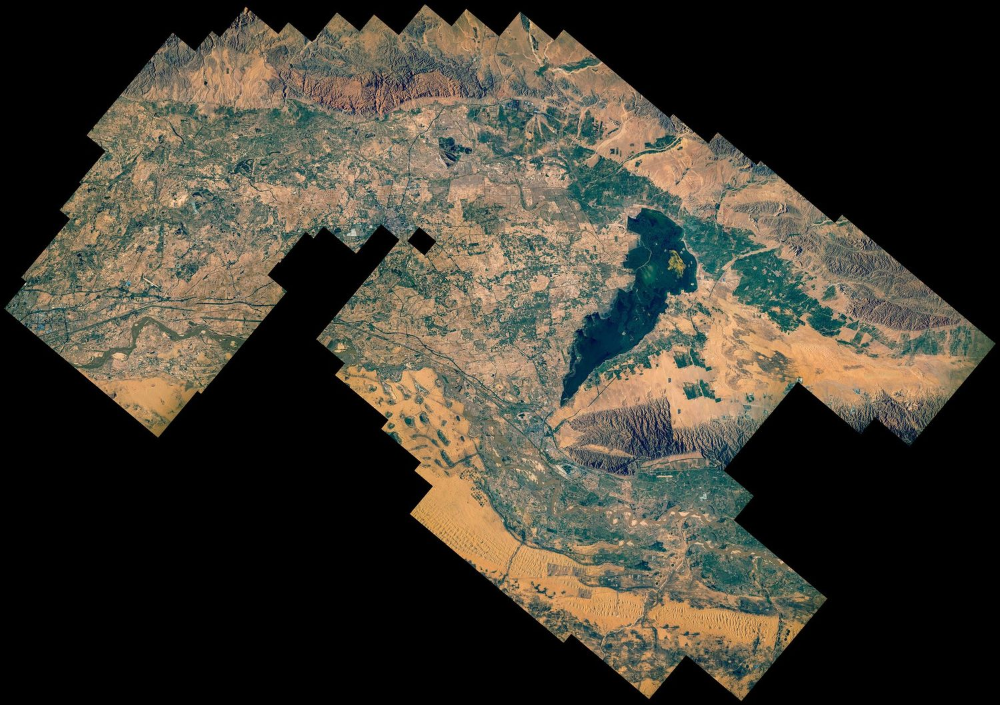
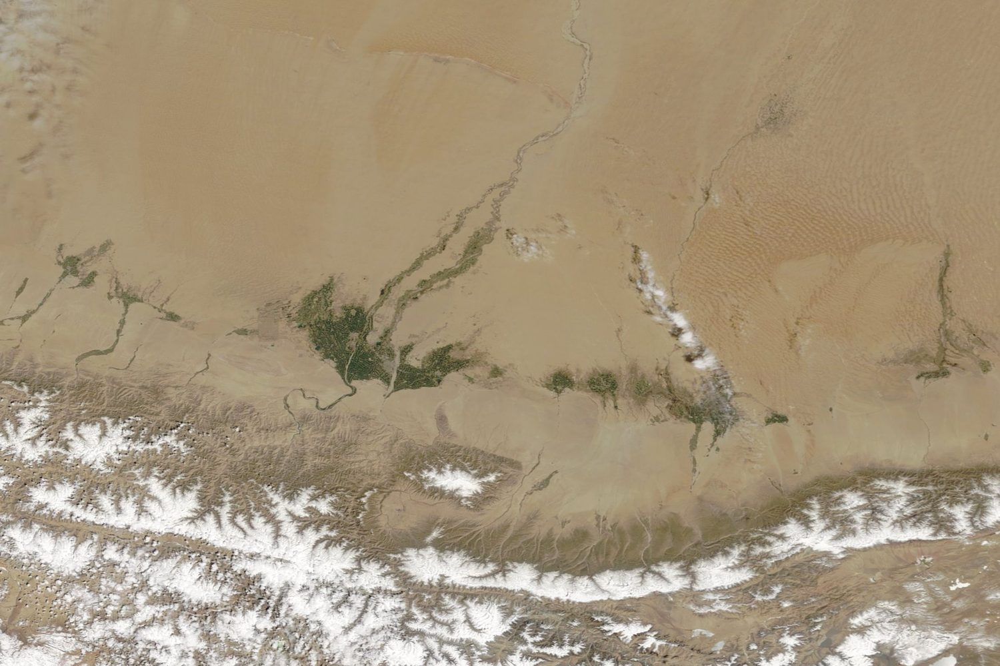

西北的沙，与人的两千年
西北的沙是慢慢来的。
在河流的改道、气候的干湿摆动、人类活动的作用下，这里才有了今天的样子。
从绿洲头的驼铃和商路，沙坡上的草方格，再到卫星拍下的光伏板。
绿洲的兴废
塔克拉玛干南缘 公元前 2 世纪 — 公元 4 世纪
塔克拉玛干南缘，尼雅、楼兰这些名字如今多半只留在考古报告里。
两千多年前，它们是丝绸之路上的绿洲城邦，靠昆仑山和天山流下来的雪水种地、放牧，接待往来的商队。
随着河道的偏移，下游的水逐年减少。屯田要水，牲畜要草，植被无法承受水源的缺失，于是沙子一点点进了田里，城最后空了下来。
城废弃的原因不只一个。战事、商路改道、政治中心的迁移都在其中；水土的退化，更像是最后压上去的一根稻草。
直至1994 年，“奋进号”航天飞机带着成像雷达飞过这片沙海，人们终于得以见到这片干涸大地的全貌。雷达波穿过干燥的沙层，照见沙面下的旧河床——那里曾经有过流水和人家。
枯竭
河西走廊与阿拉善 1900 — 1978
到了二十世纪，河西走廊和阿拉善一带的人口持续增长。
耕地与牲畜数量持续增长，而水资源的补给并没有同步增加。石羊河、黑河的尾闾湖开始缩小，地下水位下降，依赖它活着的灌木和草成片枯死。风一起，沙便如期而至。
- 1955
中国科学院在宁夏中卫的沙坡头建起第一个沙漠研究站。彼时的包兰铁路要数次穿越腾格里沙漠，国内外对于“铁路防沙”这一课题都没有现成的结果。
- 1958
包兰铁路通车。研究站的人在沙丘上反复尝试，把麦草扎进沙里，围成方格，用来压住流沙。它便是草方格的原型。
- 1959
石羊河尾闾的青土湖干涸，此后约半个世纪都未能见水。人们有关“民勤绿洲退化”的记忆，大多是从这里来的。
- 1978
三北防护林工程开始，从西北一路延伸到华北和东北西部。
固沙的办法在五十年代便已经出现，可用水量却未见减少。为了弥补造林的用水缺口，人们开始抽取地下水；地下水抽得越深，人工林越难以成活。后来讲“以水定绿”，就是从这些年的教训里来的。

山、水与沙
祁连山南北 1994 年 4 月
这里的荒漠化进程，离不开地形的作用。
北方是戈壁和沙地，中间为祁连山，山的南面是青海湖和高原。祁连山的冰雪融水，同时滋养着河西走廊的绿洲与山南的草原。
山、水、沙和人，始终是一个相互作用的系统。上游的雪少一点，下游的绿洲就瘦一点；下游多抽一口井，尾闾的湖就退一截。
1994 年 4 月，航天飞机朝南拍下了右边的照片。它不仅是一张"风光照"，更是一张地理剖面图——它直观说明了：为什么河西走廊的绿洲，如此依赖上游山区的水。

沙尘的记忆
华北与西北太平洋上空 2000 — 2019
北方的春天，在 2000 年前后常常是黄的。
年 4 月，一场强沙尘越过华北落到北京。第二天，卫星从轨道上拍下了沙尘铺满华北上空的样子。
之后的十几年，情况在一点点好转。卫星和地面激光雷达留下的记录显示，从中国西部和蒙古吹向东方的沙尘在一点点减少，春天减得最明显。
至于为什么会少，研究者说得很小心。“风场变了”，“地上的草木多了”，“土壤也湿了一些”，几样都可能有关，很难说是哪个自然条件的功劳。但是人的作用，却是毋庸置疑的。


新芽
腾格里、库布其与塔克拉玛干 1981 — 2024
这十几年，库布其、腾格里一带的治沙换了思路。沙地上架起光伏板，板上发电，板下种草，板间放羊。发电挣来的钱用来养护草木，过去那种“种得活、养不起”的难处，算是有了一个解法。
NASA 把 2017 年和 2024 年的两张卫星影像进行对比。七年间，黄河南岸狭长的沙丘带上，光伏板铺开了一大片。按照规划，这条“光伏长城”还会接着往两头延伸。


库布其沙漠中的光伏阵列，左 2017 年 12 月，右 2024 年 12 月。拖动中间的竖线对比。NASA Earth Observatory / Michala Garrison · Landsat 8、9
2022 年 6 月，欧洲宇航员萨曼莎·克里斯托福雷蒂在国际空间站上拍下了库布其。她在照片上写道，这片沙漠一半多已经被植被盖住，能从太空看见这样的变化，她很高兴。
照片里有成片的绿，有弯弯的黄河，也依然有不少沙丘裸露着。直到今天，人和流沙还在拉锯；治沙没做完，人们也不会停下。

光伏板是新办法。更多的地方，靠的还是一锹一锹的人力。
1981 年春天，甘肃古浪县的六位农民联户承包了腾格里沙漠南缘的八步沙，住进沙窝里种树。沙子不肯停，栽下的苗常被风掏走、被沙埋住。几年摸索下来，他们记下一句口诀：“一棵树，一把草，压住沙子防风掏。”老人们干不动了，儿子接着干；2016 年，孙辈也回到了林场。
民勤的青土湖干了将近五十年。2007 年起，石羊河流域开始重点治理，关井压田，把省下的水往下游送。2010 年，湖底重新出现了一片季节性的水面，约有三平方公里。
塔克拉玛干的边上，人们一段一段地围。先扎草方格、立起高高的沙障，把流动的沙丘按住；再在格子里栽梭梭、红柳、沙拐枣，用滴灌一棵一棵地浇。2024 年 11 月 28 日，最后一段在沙漠南缘接上，环绕沙漠、长 3046 公里的绿色阻沙防护带合龙。
摄于2020 年春的这张卫星图上，沙漠边缘那的绿色，是绿洲区域返青的标志。

人工治沙的几种做法示意 · 本平台绘制
-
草方格
麦草、稻草扎进沙里，围成一米见方的格子，压低贴地的风，让沙面慢慢结皮。沙坡头的包兰铁路就是这样守下来的。
-
灌木锁边
沿沙漠边缘栽梭梭、红柳、沙拐枣，用滴灌一棵棵地浇，连成一道挡沙的林带，把流沙和绿洲隔开。
-
生态输水
关井压田，省下用水，再顺着河道把水送到下游的湖和林地。干了半个世纪的青土湖，就是这样重新有了水面。
-
光伏治沙
板上发电、板下种草、板间放羊。发电的收入用来养护草木，治沙从只花钱变成了能挣钱。
结语：长路
历史、未来 2026 —